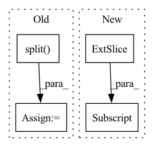

Pattern ID :25574

Before Change
sub_channels = int(tf.math.ceil(input_channel / split))
spx, remainder = inputs[:, :, :, : (split - 1) * sub_channels], inputs[:, :, :, (split - 1) * sub_channels :]
spx = tf.split(spx, split - 1, axis=-1)
gathered_result = []
for id, ii in enumerate(spx):
sp = ii if id == 0 else (sp + ii)
sp = depthwise_conv2d_no_bias(sp, kernel_size=3, padding="SAME", use_bias=True, name=name + "spx_{}_".format(id + 1))
After Change
if image_data_format() == "channels_last":
spx, remainder = inputs[:, :, :, : (split - 1) * sub_channels], inputs[:, :, :, (split - 1) * sub_channels :]
else:
spx, remainder = inputs[:, : (split - 1) * sub_channels], inputs[:, (split - 1) * sub_channels :]
spx = functional.split(spx, split - 1, axis=channel_axis)
gathered_result = []
for id, ii in enumerate(spx):
sp = ii if id == 0 else (sp + ii)
In pattern: SUPERPATTERN
Frequency: 4
Non-data size: 4
Instances
Fragment ID: 77748787
Project Name: leondgarse/keras_cv_attention_models
Commit Name: 7fe31da02f008f26eff018ec2199631227c94efc
Time: 2023-02-10
Author: leondgarse@gmail.com
File Name: keras_cv_attention_models/edgenext/edgenext.py
M Class Name: AnonimousClass
N Class Name: AnonimousClass
M Method Name: split_depthwise_transpose_attention(9)
N Method Name: split_depthwise_transpose_attention(9)
M Parent Class:
N Parent Class:
M File Name: keras_cv_attention_models/edgenext/edgenext.py
N File Name: keras_cv_attention_models/edgenext/edgenext.py
M Start Line: 107
M End Line: 131
N Start Line: 113
N End Line: 143
'>
Before Change
for j in range(len(test_probs)):
test_file_name = self.test_list[j]
frame = test_file_name.split("/")[-1][:-4]
proj_path = join(cfg.dataset_path, test_scan_name, "proj")
proj_file = join(proj_path, str(frame) + "_proj.pkl")
if isfile(proj_file):
with open(proj_file, "rb") as f:
proj_inds = pickle.load(f)
probs = test_probs[j][proj_inds[0], :]
pred = np.argmax(probs, 1)
store_path = join(test_path, test_scan_name, "predictions",
str(frame) + ".label")
pred = pred + 1
pred = remap_lut[pred].astype(np.uint32)
After Change
proj_inds = inputs["data"].reproj_inds[0]
// proj_inds = inputs.proj_inds
probs = results[proj_inds, :]
// probs = results[j][proj_inds, :]
pred = np.argmax(probs, 1)
'>
Fragment ID: 77748774
Project Name: isl-org/open3d-ml
Commit Name: 1ada80a42a187a3eefcb45d2f70078570d50872d
Time: 2020-08-22
Author: yilingq@umd.edu
File Name: ml3d/datasets/semantickitti.py
M Class Name: SemanticKITTI
N Class Name: SemanticKITTI
M Method Name: save_test_result(3)
N Method Name: save_test_result(3)
M Parent Class:
N Parent Class:
M File Name: ml3d/datasets/semantickitti.py
N File Name: ml3d/datasets/semantickitti.py
M Start Line: 107
M End Line: 126
N Start Line: 108
N End Line: 129
'>
Before Change
actions = actions[..., None, None].expand(-1, -1, -1, img_h, img_w) // [b, t, a, h, w]
xa = torch.cat([x, actions], dim=2) // [b, t, c+a, h, w]
xa_patch = self._reshape_patch(xa) // [b, t, cpp + app, h_, w_]
x_patch, a_patch = torch.split(xa_patch, self.patch_c, dim=2)
else:
x_patch = self._reshape_patch(x) // [b, t, cpp, h_, w_]
a_patch = None
After Change
net = mask_true[:, t - context_frames] * x_patch[:, t] \
+ (1 - mask_true[:, t - context_frames]) * x_gen
if self.action_conditional:
action = a_patch[:, t]
if self.conv_actions_on_input:
net_shape1 = net.shape
net = self.conv_input1(net)
'>
Fragment ID: 77748789
Project Name: ais-bonn/vp-suite
Commit Name: 32d1c2bc9d9d7c6f907dc08a56dc077693ec17cb
Time: 2022-02-11
Author: boltres@ais.uni-bonn.de
File Name: vp_suite/models/predrnn/predrnn_v2.py
M Class Name: PredRNN_V2
N Class Name: PredRNN_V2
M Method Name: forward(3)
N Method Name: forward(3)
M Parent Class: VideoPredictionModel
N Parent Class: VideoPredictionModel
M File Name: vp_suite/models/predrnn/predrnn_v2.py
N File Name: vp_suite/models/predrnn/predrnn_v2.py
M Start Line: 138
M End Line: 202
N Start Line: 142
N End Line: 209
'>
Before Change
Linearly transformed input.
result = []
forgets = f.split(1, dim=0)
h_tm1 = hidden
for i, h_t in enumerate((f * x).split(1, dim=0)):
if h_tm1 is not None:
h_t = h_t + (1 - forgets[i]) * h_tm1
h_t = h_t.view(h_t.size()[1:])
result.append(h_t)
h_tm1 = h_t
return torch.stack(result)
After Change
for i in range(hh.shape[0]):
h_t = hh[i, :, :]
ft = f[i, :, :]
if htm1 is not None:
h_t = h_t + (1 - ft) * htm1
result.append(h_t)
htm1 = h_t
'>
Fragment ID: 77748783
Project Name: speechbrain/speechbrain
Commit Name: 6cb2b3588ea6747fe2809bf68f924cb1b4f05718
Time: 2020-06-04
Author: jianyuan.zhong@apollov01.server.mila.quebec
File Name: speechbrain/lobes/models/qrnn.py
M Class Name: QRNNLayer
N Class Name: QRNNLayer
M Method Name: forgetMult(4)
N Method Name: forgetMult(4)
M Parent Class: torch.jit.ScriptModule
N Parent Class: torch.jit.ScriptModule
M File Name: speechbrain/lobes/models/qrnn.py
N File Name: speechbrain/lobes/models/qrnn.py
M Start Line: 73
M End Line: 81
N Start Line: 73
N End Line: 82